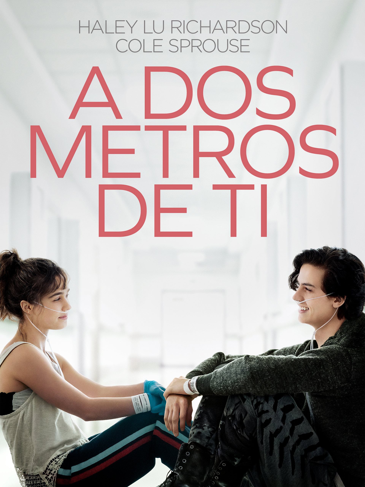
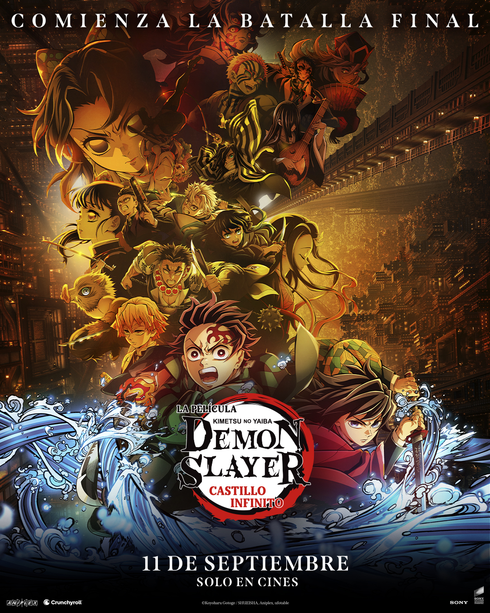

Admite: mi princesa 💞
A dos metros de ti
Porque aunque ahora la distancia nos separe un poquito, sé que nuestro amor es más fuerte que cualquier kilómetro.
Cada una de estas historias me hace pensar en ti, en nosotros y en todo lo que siento. Las elegí especialmente para ti.

Porque aunque ahora la distancia nos separe un poquito, sé que nuestro amor es más fuerte que cualquier kilómetro.

Especialmente por la historia de Hakuji y Koyuki… un amor puro que trasciende todo y que siempre me hace pensar en lo mucho que quiero cuidarte.
Porque me has enseñado a ver los colores y los lugares más brillantes, incluso en los días difíciles.